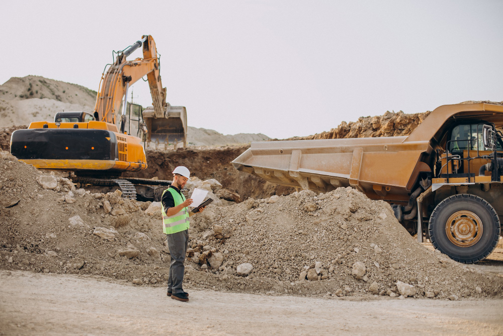

MyForge Constructions
Where strong foundations meet modern design
Services
MyForge Constructions delivers essential expertise and services for building successful infrastructure projects across diverse markets. Our integrated approach supports developers and clients of all sizes, adaptable to both new builds and enhancements of existing structures. Beyond construction, our skilled team provides guidance through every stage from planning and design to execution and long term maintenance. We are a trusted partner for private developers, government agencies, and organizations seeking reliable, cost-effective, and scalable construction solutions in both urban and rural environments.
Construction Project Oversight
Our streamlined system enhances construction project oversight, giving builders and developers complete visibility anytime, anywhere. MyForge Constructions clients benefit from precise budgeting and resource tracking, secure project documentation, rigorous safety compliance, and advanced tools that boost operational efficiency while ensuring quality. Built for adaptability, our processes can be customized to meet the demands of any project, with expert support always available. We simplify complexity and reduce costs, so you can focus on growing your business and delivering outstanding construction outcomes.
Construction Services and Solutions
Road Constructions
Using our proven methodologies, we efficiently identify the best routes by analyzing structural, environmental, and economic factors. Whether your project involves a single roadway or an expansive transportation network, we provide thorough evaluations ranked by durability and cost-effectiveness. When it's time for on site execution and community coordination, our process ensures seamless operations, empowering your team to build strong, reliable infrastructure swiftly and effectively.
Airport Runway Constructions
Performing a thorough feasibility study before commencing an airport runway project is crucial to reducing development risks. Our engineering team applies a trusted framework to assess multiple technical and environmental factors comprehensively. Site inspections of the proposed location are often necessary to complement existing data with accurate field analysis. Our experts excel at identifying critical indicators and understanding the unique requirements of aviation infrastructure. Along with delivering a detailed feasibility report, we provide strategic recommendations to help further mitigate challenges.

Building Constructions
Building projects come with unique demands compared to standard developments. We design customized construction and architectural solutions tailored to diverse client needs and regulatory standards. Our modular approach allows for seamless expansion or integration with existing structures. Additionally, we offer turnkey building system templates designed for various residential, commercial, and industrial capacities.
Bridge Constructions
Establishing a long-lasting bridge construction project demands skilled engineers who understand how to fully apply modern design principles and navigate the practical challenges of large-scale builds. Equally important are site specialists capable of ensuring reliable safety standards and structural upkeep. Our training programs equip all team members with the essential skills to manage and sustain successful bridge construction projects.
Railway Constructions
Even with detailed planning and design, there is no substitute for on-site testing in railway construction. In regions with unique terrain or regulatory requirements, we strongly recommend initiating a pilot section to confirm project viability and address technical or logistical challenges before full scale deployment. From our experience, trial builds reduce costly setbacks and ensure smoother execution. At MyForge Constructions, we provide the necessary railway infrastructure and oversee the pilot process from groundwork to completion. During this phase, we supply detailed performance analyses and strategic insights to refine delivery and optimize efficiency.
Gas Plant Construction Service
Gas plant construction projects demand specialized expertise and precise coordination. We handle the procurement of critical processing and safety equipment, ensuring compliance with industry regulations and client requirements. Our modular plant designs allow for scalable expansion or seamless integration with existing infrastructure when necessary. In addition, we offer standardized construction frameworks tailored to different plant sizes, providing efficiency and consistency throughout the building and commissioning process.
About
MyForge Constructions stands firm, building with vision and strength.
From design to delivery, every project reflects precision and trust.
Guided by innovation and a commitment to excellence, we create structures that endure.